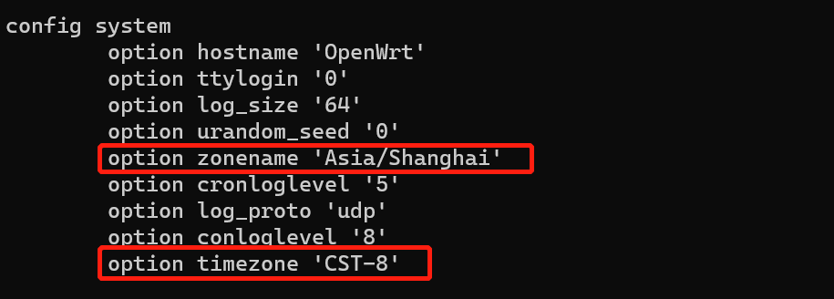

openwrt 时区设置
最近在使用 openwrt 时发现在 web 控制台设置好时区后，系统日志依然显示的是 UTC 时间，慢了 8 小时。查了下原来是 openwrt 默认没有安装 zoneinfo，安装后即可。
首先在 web 端或直接修改配置文件：/etc/config/system 中的 zone 相关参数：

然后安装对应 zoneinfo：
opkg update
opkg install zoneinfo-asia
重启 system 服务：
/etc/init.d/system restart
然后输出日志日期就正常了。